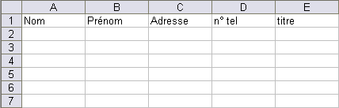
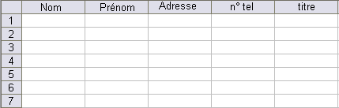

Ce tutoriel est là pour vous expliquer ce qu'est le publipostage, à quoi il sert et comment il fonctionne.
Le publipostage peut être long à faire sans aide, mais vous allez voir qu'avec les étapes détaillées de ce tutoriel, ce sera un jeu d'enfant pour de bons Zéros tels que vous. :p
Le publipostage est une des fonctions de Word. :) Cette fonction est disponible sur les versions 2003 et 2007 de Word. Malgré une interface graphique améliorée dans la nouvelle version, le publipostage sur la précédente version est là aussi facilemnt utilisable. Ainsi, pour qu'un maximum de personnes puissent comprendre comment se passe le publipostage, je vais l'expliquer pour les deux versions : d'abord 2003, puis 2007 (dans l'ordre des années, bien sûr ^^ ) !
Alors, le publipostage, c'est tout simplement l'action d'envoyer une même lettre à plusieurs personnes (des centaines de milliers de personnes si besoin) dont seules les coordonnées changent, par exemple. Vous êtes un membre du Site du Zéro et vous voulez faire connaitre le site à tous vos contacts, ou bien encore, à une liste de personnes dont vous connaissez les coordonnées et les informations personnelles. Alors le moyen le plus rapide qui s'offre à vous, c'est le publipostage. Le publipostage, c'est donc un moyen facile et rapide (une fois la lettre et la liste de contacts saisie) d'envoyer une même lettre, dont, à l'intérieur, seules les coordonnées (et pourquoi pas l'identité, etc.) des individus changent.
À quoi ressemble une liste de contacts ?
Pour faire simple, elle peut ressembler à un tableau tel que celui-ci :
Titre
Nom
Prénom
Adresse
Adresse internet
N° de Tel.
Monsieur
XXX
...
...
...
...
Madame
YYY
...
...
...
...
...
...
...
...
...
...
Mais il peut tout à fait s'agir d'une liste de contact Outlook, ou MSN.
Et si je n'utilise pas le publipostage ?
Vous allez passer des heures à écrire vos lettres, les copier-coller en bon nombre et y réinsérer les coordonnées et autres informations uniques souhaitées. Maintenant, si vous avez envie de perdre du temps, libre à vous. :)
Mais ne vous en faites pas, une fois que je vous aurai expliqué, ça ira tout seul.
Après cette courte introduction, nous allons préparer le terrain pour effectuer le publipostage sur les versions 2003, puis 2007 (le plus vieux en premier, c'est normal). :)
Bien que tout le publipostage se fasse via Word, il ne vous faut pas que Word pour travailler, il vous faut tout d'abord créer la liste des destinataires. Relisez la première partie de ce tutoriel, vous allez voir, il vous faut aussi Excel pour créer le tableau des destinataires.
Un petit tableau Excel
Pour commencer, il vous faut ouvrir Excel. Tout ce que vous avez à faire, c'est un petit tableau, avec titre (Monsieur, Madame), nom, prénom, pourquoi pas aussi adresse, numéro de téléphone, ...
Faites autant de lignes que vous voulez ! C'est vous qui décidez !
Noms de colonnes
Il est recommandé de mettre des titres au tableau pour le nom, le prénom...
Bon, je ne dois pas être très clair, alors je vais vous expliquer cela en image, c'est toujours plus compréhensible !

Document A

Document B
Donc, d'après ces deux documents, il serait plus sage de faire comme sur le Document B, ce qui ne vous empêche pas de faire comme sur le Document A, on verra après que l'on peut faire la différence, lors de la saisie du tableau des destinataires, lors de la procédure du publipostage !
Mais quelle est la différence entre les deux documents ?
Le Document A n'a pas de nom aux colonnes, ainsi c'est la première ligne qui est modifiée. Lors du publipostage, vous pouvez bien sûr coder une case pour permettre de saisir le nom de la colonne à partir de la deuxième ligne (cd. Document A), mais, encore une fois, il est recommencé de faire tel le document B. Pour cela, cliquez sur le haut d'une colonne (cadre A). Ce nom A se retrouve afficher dans un cadre en blanc. Il suffit donc de le modifier :
Attaquons à présent la partie pratique du publipostage. ;)
Bon, je ne vous considère pas comme des cloches (vous êtes d'intelligents Zér0s) et je vous laisse ouvrir Word tout seuls.
La lettre type
Le publipostage démarre par une lettre. Une lettre que vous devez écrire. Alors, je vais vous montrer un exemple de lettre type :
Citation : Lettre type
_ _ Bonjour, Je suis ravi de vous présenter le plus fabuleux des sites d'apprentissage : Le Site du Zéro. Qu'est-ce que ce site peut vous apporter ? C'est très simple, grâce à ce site, vous allez pouvoir, _ apprendre à créer votre propre site web. Mais, plus encore, vous allez pouvoir dynamiser votre site grâce à un tutoriel très explicite sur le PHP, un langage informatique qui est expliqué en détail sur le Site du Zéro et plus précisément dans le tutoriel sur PHP / MySQL.
Mais qu'attendez-vous _ ? Rejoignez vite la grande communauté des Zér0s. :) Elle répondra à vos questions sur beaucoup de thèmes et vous pouvez participer aux discussions, vous pourrez même créer vos propres tutoriels dans lesquels vous pourrez expliquer tout ce que vous connaissez sur l'informatique. Enfin, vous pourrez faire partager les nouveautés de l'informatique en rédigeant des news, qui, si elles sont validées, seront mises en ligne, sur la page d'accueil du site, et seront lues par les milliers de Zér0s de la communauté du site. Eh oui, car 114752 membres sont déjà inscrits sur le Site du ZérO ! Serez vous le 114753ième ?
Voilà ! J'ai fini la lettre. Vous voyez maintenant à quoi peut ressembler une lettre type ! Mais vous allez me dire, il manque des choses dans cette lettre et il y a des choses qui ne collent pas !
On y vient tout de suite !
Modifications personnelles
Alors qu'est-ce que c'est, les "_" ?
Ce sont les endroits où il va falloir rajouter des informations. Reprenons le texte. Au tout début, pas besoin d'aller bien loin, on a :
Citation : Lettre type
_ _ Bonjour,
Madame, Monsieur, Bonjour,
Justement, il va falloir mettre des informations personnelles à la place des "_".
Citation : Lettre type
Monsieur XXX Bonjour,
C'est beaucoup mieux, vous ne trouvez pas ? Bon, on peux aussi mettre :
Citation : Lettre type
Madame YYY Bonjour,
Y'a pas de jaloux comme cela. Tout le monde est servi(e) :p Donc voilà, grâce au publipostage, on va considérer que la lettre va être modifiée (pour reprendre le petit exemple de tout à l'heure) comme ça :
Citation : Lettre type
"Titre" "Nom" Bonjour,
Eh bien, on va justement apprendre à le faire. Alors allons-y ! Attaquons ensemble le publipostage :pirate:
Donc, démarrons dès maintenant la partie pratique, la partie TP si vous préférez ce terme. Reprenons la lettre type :
Citation : Lettre Type
, , Bonjour, Je suis ravi de vous présenter le plus fabuleux des sites d'apprentissage : Le Site du Zéro. Qu'est-ce que ce site peut vous apporter ? C'est très simple, grâce à ce site, vous allez pouvoir, apprendre à créer votre propre site web. Mais, plus encore, vous allez pouvoir dynamiser votre site grâce à un tutoriel très explicite sur le PHP, un langage informatique qui est expliqué en détail sur le Site du Zéro et plus précisément dans le tutoriel sur PHP / MySQL.
Mais qu'attendez-vous ? Rejoignez vite la grande communauté des Zér0s. :) Elle répondra à vos questions sur beaucoup de thèmes et vous pouvez participer aux discussions, vous pourrez même créer vos propres tutoriels dans lesquels vous pourrez expliquer tout ce que vous connaissez sur l'informatique. Enfin, vous pourrez faire partager les nouveautés de l'informatique en rédigeant des news, qui, si elles sont validées, seront mises en ligne, sur la page d'accueil du site, et seront lues par les milliers de Zér0s de la communauté du site. Eh oui, car 94193 membres sont déjà inscrit sur le Site du ZérO ! Serez vous le 94194ième ?
Donc, va bien falloir la modifier avec les moyens du publipostage, cette lettre. Alors ouvrez Word. Copiez-collez la lettre présente ci-dessus ou bien une lettre que vous avez vous même faite. ;) Vous pouvez enregistrer le fichier dans le même dossier que le fichier Excel. Imaginons que le fichier Excel se trouve sous le nom de tableau et que le fichier Word se trouve sous le nom Lettre-type. Vous avez alors ouvert Word et inséré la lettre type d'exemple.
J'avoue que ça fait encore moins bien, mais bon c'est le but du jeu. :-°
Vous avez donc ouvert Word et inséré la lettre type. Attaquons tout de suite :zorro:
Étape 1
Allez dans : Outils
Lettre et publipostage
Fusion et publipostage.
Vous allez devoir sélectionner le tableau. En gros, il vous faut sélectionner le fichier Excel, du nom de tableau.
Un petit menu apparaît à droite. Vous sélectionnez Lettre (très certainement pré-coché !).
Ensuite, vous cliquez sur Suivant.
Étape 2 : sélection du document de base
Utiliser le document actuel (généralement pré-coché aussi). Cliquez sur suivant.
Étape 3 : sélection des destinataires
Vous avez trois solutions.
Utilisation d'une liste existante : vous allez alors, à l'aide du lien Parcourir, utiliser une liste existante pour la liste des destinataires. C'est l'option qu'on va utiliser, étant donné que l'on considère qu'on a déjà une liste. Mais vous pouvez utiliser une des deux autres options.
Sélection à partir de ses contacts Outlook : c'est très facile à comprendre.
Saisie d'un nouvelle liste : Vous devez alors créer une liste !
Prenez donc l'option que vous souhaitez en fonction de ce que vous voulez faire, en fonction des destinataires que vous choisissez...
Bon, on va sélectionner la liste tableau que l'on a déjà créée !
Alors quand vous cliquez sur Parcourir, vient alors cette fenêtre qui n'a aucun rapport. Il vous faut alors sélectionner vos documents, ou votre bureau...
Si vos colonnes ne possèdent pas de titre (par conséquent celui-ci est indiqué sur la première ligne du tableau), vous pouvez toujours cocher cette option :
Dans le cas contraire, laissez cette case vide sinon votre premier destinataire sera ignoré. :o
Vous mettez donc Ok ! Attention cependant à bien cocher la première ligne, la première TABLE.
Voilà, le publipostage est bien parti ! On continue tout suite !
Les listes
Vous devez, à l'emplacement demandé, mettre les liens des colonnes de votre table. Si vous devez vous déplacer dans le texte avant d'en rajouter un, cliquez sur OK, puis déplacez-vous, et enfin cliquez sur "Modifier la liste des destinataires". Vous pouvez donc mettre les liens des colonnes en plusieurs fois. :)
Citation : Lettre de publipostage
<<Titre>> <<Nom>> Bonjour, Je suis ravi de vous présenter le plus fabuleux des sites d'apprentissage : Le Site du Zéro. Qu'est-ce que ce site peut vous apporter ? C'est très simple, grâce à ce site, vous allez pouvoir, <<Titre>> apprendre à créer votre propre site web. Mais, plus encore, vous allez pouvoir dynamiser votre site grâce à un tutoriel très explicite sur le PHP, un langage informatique qui est expliqué en détail sur le Site du Zéro et plus précisément dans le tutoriel sur PHP / MySQL.
Mais qu'attendez-vous ? Rejoignez vite la grande communauté des Zér0s. :) Elle répondra à vos questions sur beaucoup de thèmes et vous pouvez participer aux discussions, vous pourrez même créer vos propres tutoriels dans lesquels vous pourrez expliquer tout ce que vous connaissez sur l'informatique. Enfin, vous pourrez faire partager les nouveautés de l'informatique en rédigeant des news, qui, si elles sont validées, seront mises en ligne, sur la page d'accueil du site, et seront lues par les milliers de Zér0s de la communauté du site. Eh oui, car 94193 membres sont déjà inscrit sur le Site du ZérO ! Serez vous le 94194ième ?
Étape 4 : écriture de votre lettre
Cette étape ne sert à rien puisqu'on l'a déjà rédigée, mais bon, un jour, elle va peut-être servir. Remarquez cependant les options qui s'offrent à vous :
Bloc d'adresse ;
Ligne de salutation ;
Affranchissement électronique ;
Autres éléments...
Cliquez sur suivant !
Étape 5
Vous pouvez maintenant voir toutes vos lettres, les unes après les autres. Vous pouvez aussi exclure des destinataires. Et encore modifier la liste des destinataires.
Étape 6
Voilà, c'est la fin. Un deuxième document Word est apparu, contenant toutes les feuilles de tous les destinataires. Vous pouvez dès à présent voir toutes vos lettres une par une. Si vous souhaitez modifier quelques détails, reprenez votre premier document, modifiez-le à nouveau, et refaites l'étape finale.
Et ce autant de fois que vous le souhaitez, jusqu'à ce que ce soit parfait :D !
Donc, maintenant attaquons cette seconde version de Word, qui nous intéresse tout autant, dans le tutoriel.
Nous avons toujours la lettre type, inchangée bien sûr :
Citation :
, , Bonjour, Je suis ravi de vous présenter le plus fabuleux des sites d'apprentissage : Le Site du Zéro. Qu'est-ce que ce site peut vous apporter ? C'est très simple, grâce à ce site, vous allez pouvoir, apprendre à créer votre propre site web. Mais, plus encore, vous allez pouvoir dynamiser votre site grâce à un tutoriel très explicite sur le PHP, un langage informatique qui est expliqué en détail sur le Site du Zéro et plus précisément dans le tutoriel sur PHP / MySQL.
Mais qu'attendez-vous ? Rejoignez vite la grande communauté des Zér0s. :) Elle répondra à vos questions sur beaucoup de thèmes et vous pouvez participer aux discussions, vous pourrez même créer vos propres tutoriels dans lesquels vous pourrez expliquer tout ce que vous connaissez sur l'informatique. Enfin, vous pourrez faire partager les nouveautés de l'informatique en rédigeant des news, qui, si elles sont validées, seront mises en ligne, sur la page d'accueil du site, et seront lues par les milliers de Zér0s de la communauté du site. Eh oui, car 94193 membres sont déjà inscrit sur le Site du ZérO ! Serez vous le 94194ième ?
Donc, va bien falloir la modifier avec les moyens du publipostage, cette lettre. Alors ouvrez Word. Vous pouvez enregistrer le fichier vide dans le même dossier que le fichier Excel. Imaginons que Excel se trouve sous le nom de tableau et Word sous Lettre-type. Vous avez alors ouvert Word et inséré la lettre type d'exemple.
J'avoue que ça fait encore moins bien, mais bon c'est le but du jeu. ;)
Étape 1
Déjà, vous devez aller dans Publipostage (un gros menu tel que Accueil) et cliquer Démarrer la fusion et le publipostage. Cliquez alors sur Lettre ! Récapitulons le chemin à prendre :
Publipostage
Démarrer la fusion et le publipostage
Lettre.
La large fenêtre de publipostage est la suivante :
Ensuite, allez dans Fusion et publipostage, puis dans Lettre :
Chemin à prendre, en image ; Cliquez pour agrandir !
Après cela, vous devriez vous apercevoir qu'un nouveau bouton s'est affiché. Enfin non, il s'est coloré. Il était en noir et blanc sombre pour signifier qu'il n'était pas possible de l'utiliser. Après cette manipulation, vous pouvez l'utiliser.
Alors justement, utilisons-le !
Étape 2 : sélection des destinataires
Pour cette étape 1, vous avez trois solutions.
Utilisation d'une liste existante : vous allez alors, à l'aide du lien Parcourir, utiliser une liste existante pour la liste des destinataires. C'est l'option qu'on va utiliser, étant donné que l'on considère qu'on a déjà une liste. Mais vous pouvez utiliser une des deux autres options.
Sélection à partir de ses contacts Outlook : c'est très facile à comprendre. Vous pouvez toujours essayer si cela vous dit.
Saisie d'un nouvelle liste : vous devez alors Créer une liste !
Cliquez sur Parcourir et sélectionnez la liste tableau que l'on a déjà créée ou bien prenez la liste de vos contacts Outlook.
Jusqu'ici vous me direz, rien de trop difficile.
Bon, vu que ni l'un ni l'autre n'est d'une difficulté surprenante, je vais simplement vous montrer comment passer aux étapes suivantes, sans détailler chaque option (Tableau ou liste de Contact).
Parcourez pour sélectionner une liste de destinataires !
Alors quand vous cliquez sur Parcourir, vient alors cette fenêtre qui n'a aucun rapport. Il vous faut alors sélectionner vos documents, ou votre bureau...
Si vous n'avez pas mis les bons titres aux colonnes, vous pouvez toujours cocher cette option :
Vous mettez donc Ok ! Attention cependant à bien cocher la première ligne, la première TABLE.
Les listes
Vous devez, à l'emplacement demandé, mettre les liens des colonnes de votre table. Si vous devez vous déplacer dans le texte avant d'en rajouter un, cliquez sur OK, puis déplacez-vous, et enfin cliquez sur "Modifier la liste des destinataires". Vous pouvez donc mettre les liens des colonnes en plusieurs fois. :)
Citation : Lettre de publipostage
, , Bonjour, Je suis ravi de vous présenter le plus fabuleux des sites d'apprentissage : Le Site du Zéro. Qu'est-ce que ce site peut vous apporter ? C'est très simple, grâce à ce site, vous allez pouvoir, apprendre à créer votre propre site web. Mais, plus encore, vous allez pouvoir dynamiser votre site grâce à un tutoriel très explicite sur le PHP, un langage informatique qui est expliqué en détail sur le Site du Zéro et plus précisément dans le tutoriel sur PHP / MySQL.
Mais qu'attendez-vous ? Rejoignez vite la grande communauté des Zér0s. :) Elle répondra à vos questions sur beaucoup de thèmes et vous pouvez participer aux discussions, vous pourrez même créer vos propres tutoriels dans lesquels vous pourrez expliquer tout ce que vous connaissez sur l'informatique. Enfin, vous pourrez faire partager les nouveautés de l'informatique en rédigeant des news, qui, si elles sont validées, seront mises en ligne, sur la page d'accueil du site, et seront lues par les milliers de Zér0s de la communauté du site. Eh oui, car 94193 membres sont déjà inscrit sur le Site du ZérO ! Serez vous le 94194ième ?
Étape 4 : écriture de votre lettre
Cette étape ne sert à rien puisqu'on l'a déjà rédigée.
Cliquez sur suivant !
Étape 5
Vous pouvez maintenant voir toutes vos lettres, les unes après les autres. Vous pouvez aussi exclure des destinataires. Et encore modifier la liste des destinataires.
Étape 6
Voilà, c'est la fin. Un deuxième document Word est apparu, contenant toutes les feuilles de tous les destinataires. Vous pouvez dès à présent voir toutes vos lettres une par une. Si vous souhaitez modifier quelques détails, reprenez votre premier document, modifiez-le à nouveau, et refaites l'étape finale.
Et ce autant de fois que vous le souhaitez, jusqu'à ce que ce soit parfait :D !
Ce tutoriel est fini ! :)
Maintenant, vous savez utiliser la fonction de publipostage de Microsoft Word et Excel. Et ce sur les versions 2003 et 2007 ! J'espère que ce tutoriel a été intuitif, et bien expliqué !
Remerciements !
Je tiens à remercier profondément ptipilou ainsi que peupeu pour leur travail de zCorrection sur mon tutoriel. Je remercie aussi Tarzoune pour sa correction.
{kind=link}
{kind=link}
{kind=link}
{kind=link}
{kind=link}
{kind=link}